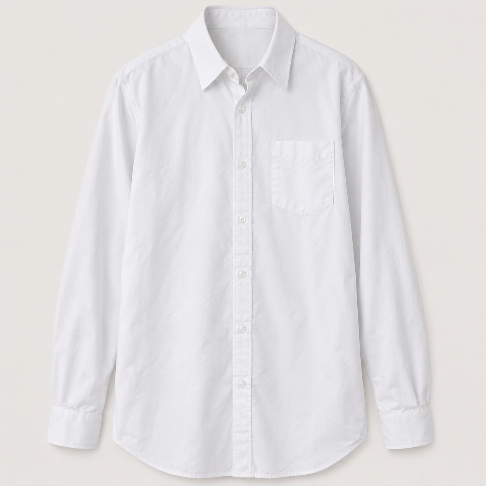
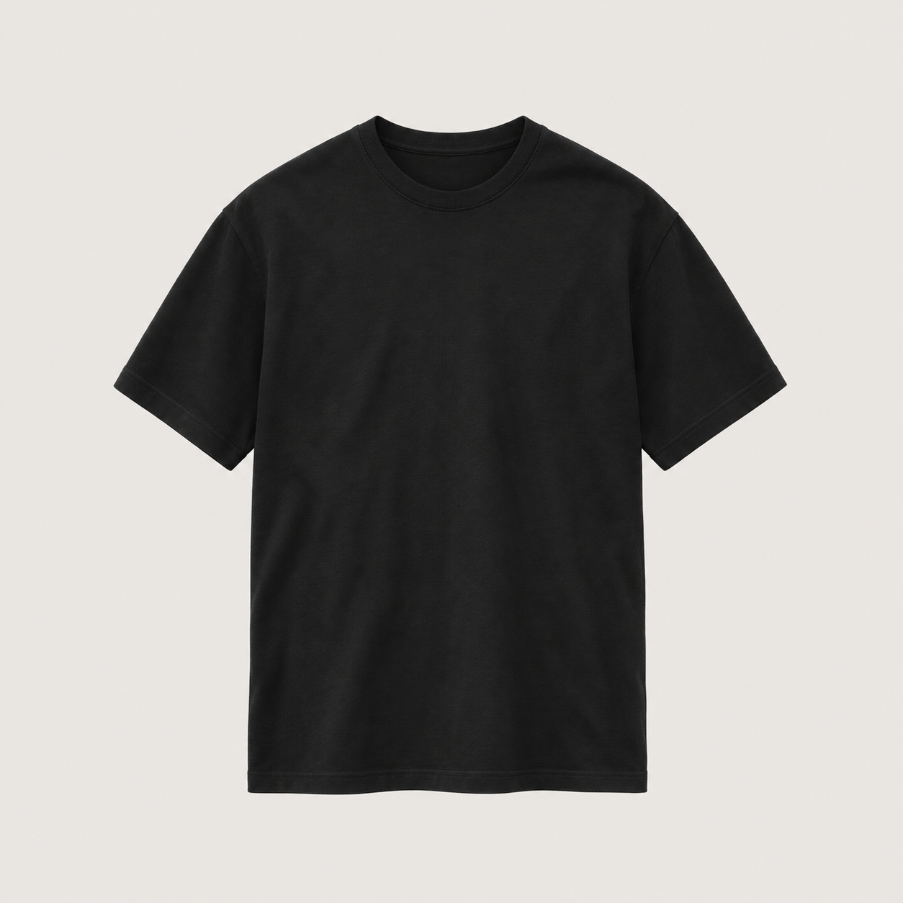
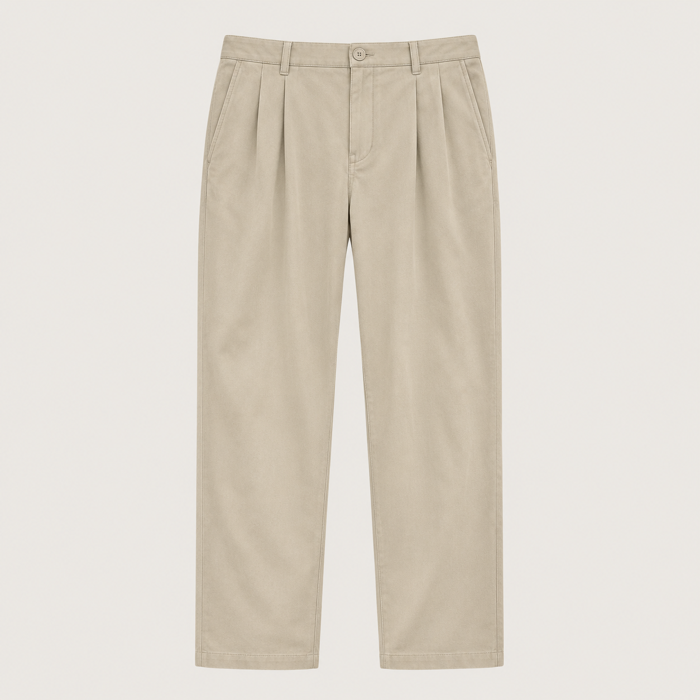
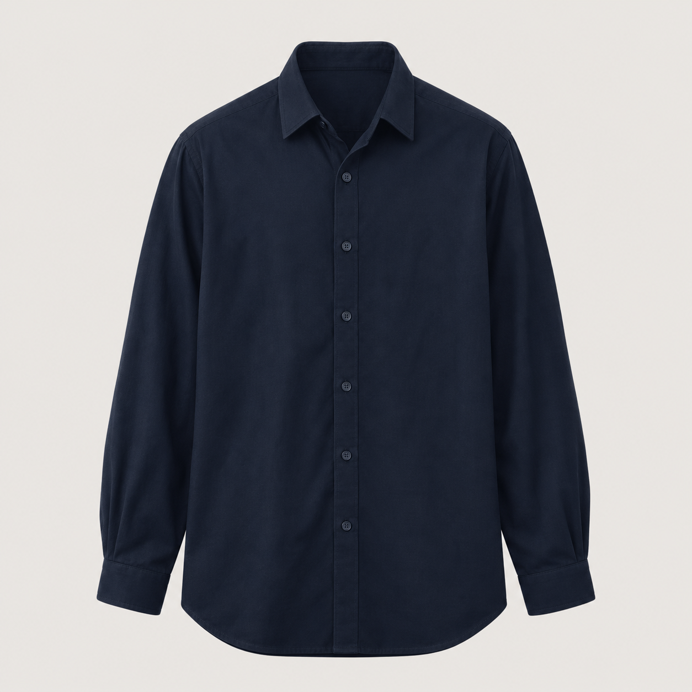
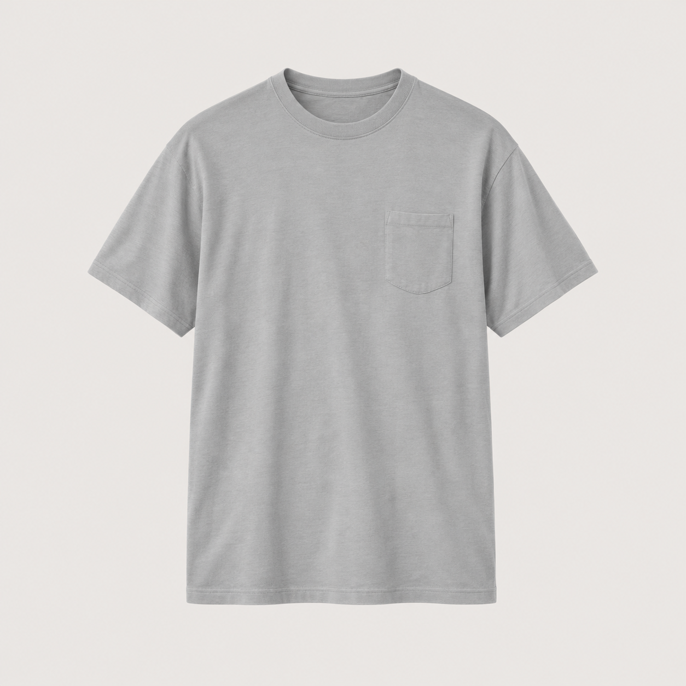
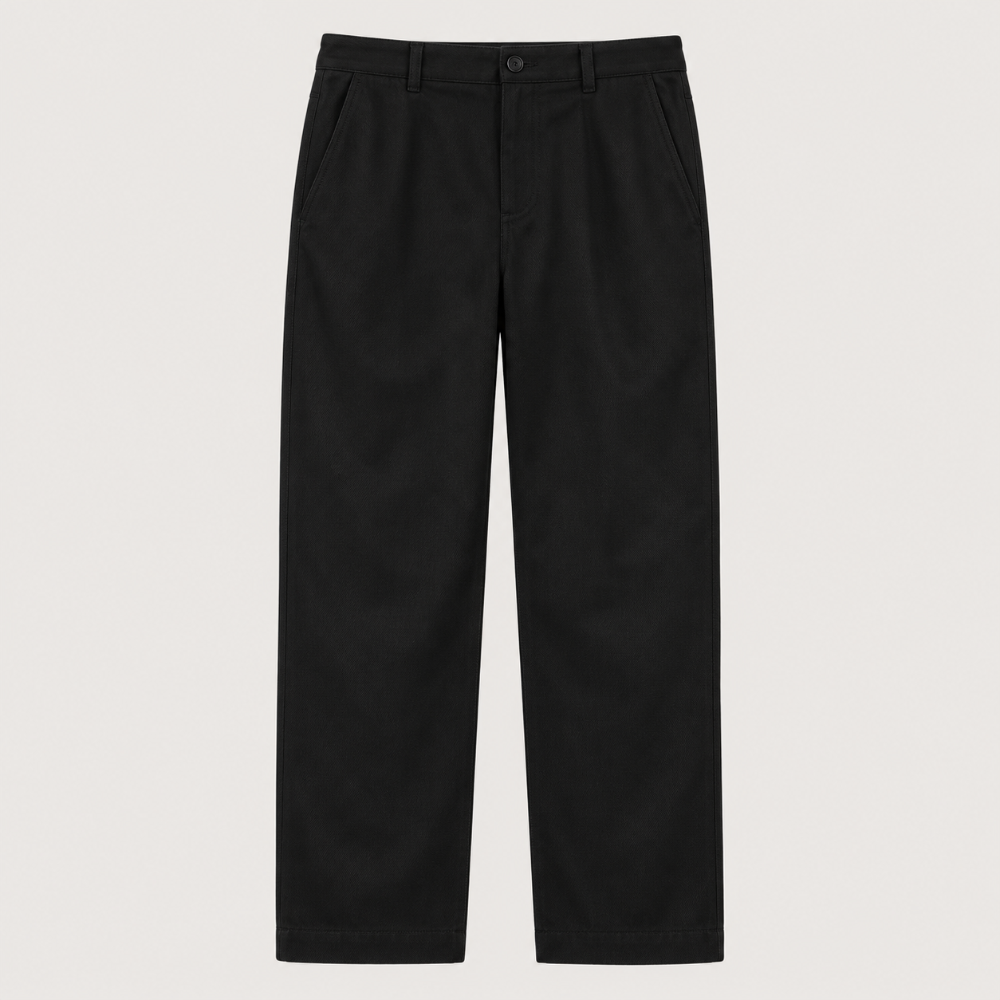
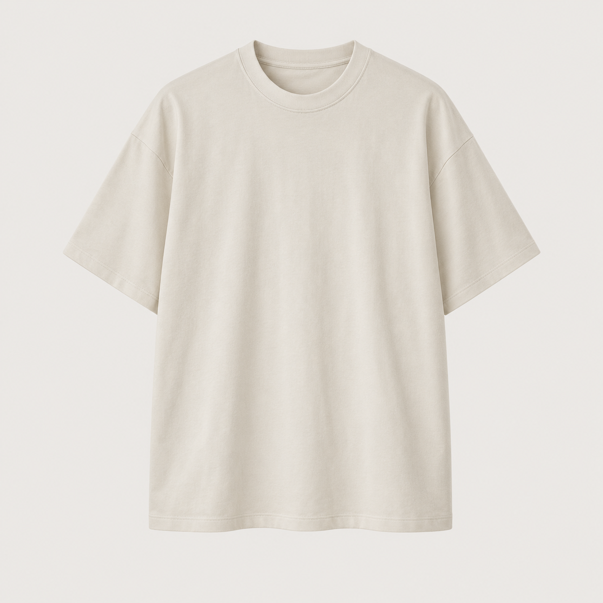
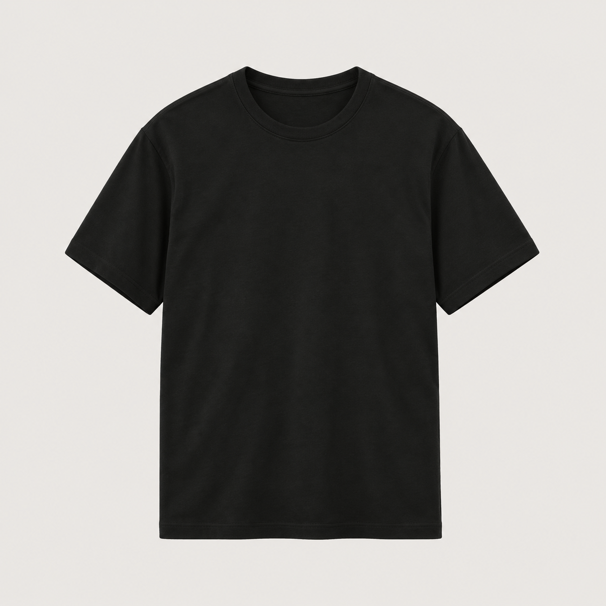

wordmark
page-title
head-product
head-sku
head-category
head-price
head-stock
head-status

name-cotton
sku-cotton
cat-cotton
price-cotton
stock-cotton

name-plain
sku-plain
cat-plain
price-plain
stock-plain

name-straight
sku-straight
cat-straight
price-straight
stock-straight

name-classic
sku-classic
cat-classic
price-classic
stock-classic

name-pocket
sku-pocket
cat-pocket
price-pocket
stock-pocket

name-twill
sku-twill
cat-twill
price-twill
stock-twill

name-over
sku-over
cat-over
price-over
stock-over

detail-title
detail-sku
detail-category-label
detail-category-value
detail-stock-label
detail-stock-value
detail-status-label
detail-status-value
result-count